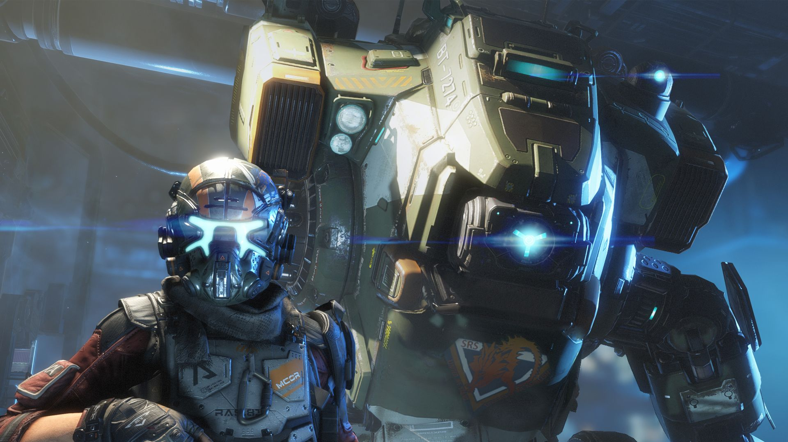

Titanfall 2 is a first-person shooter video game, developed by Respawn Entertainment and published by Electronic Arts. A sequel to 2014's Titanfall, the game was released worldwide on October 28, 2016 for Microsoft Windows, PlayStation 4 and Xbox One. In Titanfall 2, players control Titans, mecha-style exoskeletons and their pilots, who are agile and equipped with a variety of skills ranging from wall-running to cloaking. With 7 Diffrent titans to control here we will talk about their ability's and more.